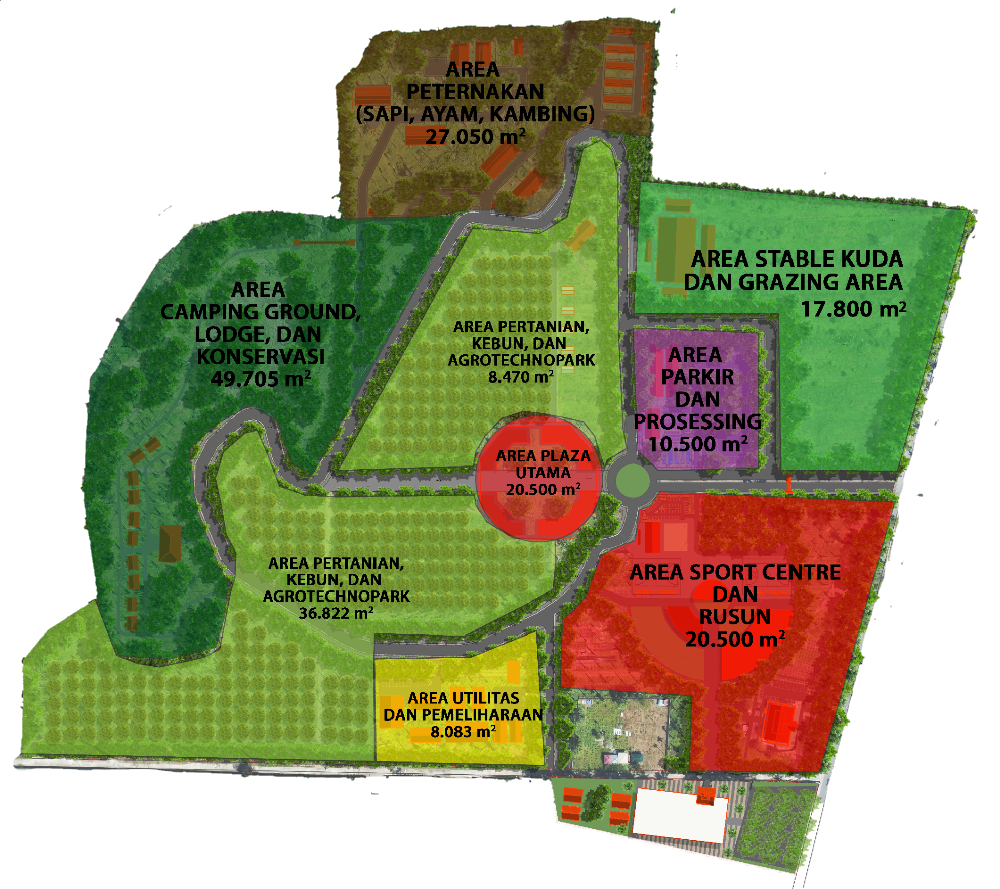

Fasilitas peternakan kambing yang dikelola dengan teknologi modern untuk mendukung riset dan produksi pangan berkelanjutan.
Sistem kandang terpadu untuk kesejahteraan hewan.
Teknologi monitoring gizi dan kesehatan rutin.
Lahan luas yang didedikasikan untuk penelitian botani, pertanian organik, dan pengembangan varietas unggul komoditas lokal.
Area pembibitan untuk berbagai jenis tanaman.
Sistem pengairan efisien berbasis IoT.
Titik kumpul utama dan pusat informasi yang dilengkapi dengan fasilitas kenyamanan bagi pengunjung dan peneliti.
Layanan informasi dan navigasi terpusat.
Area diskusi terbuka dan kolaborasi.